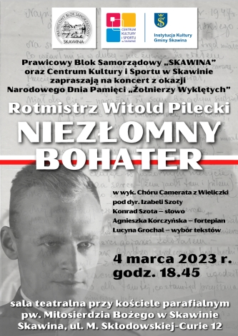
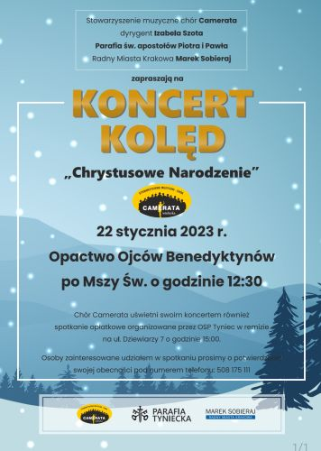
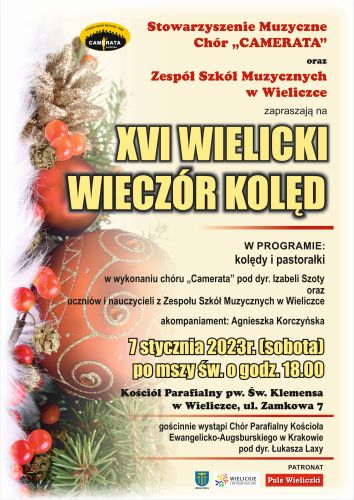

Aktualności
2023-09-01
Po dwunastu latach - czas na zmiany!Ze swojej strony serdecznie dziękuję za dotychczasową współpracę i wsparcie ...
do zobaczenia na koncertach chóru.
Już wkrótce zaprezentujemy nową stronę Cameraty.
Śpiewająco prowadząca stronę Małgorzata Wysocka2023-04-30
Majówkowy wyjazd Cameraty. czytaj dalej ...2023-03-25
25 marca o 10.00 w katedrze na Wawelu. czytaj dalej ...2023-03-04
Koncert Cameraty w Skawinie. Zapraszamy.
czytaj dalej ...
2023-01-29
Pracowita niedziela CAMERATY. czytaj dalej ...2023-01-22
Camerata zaśpiewała w Klasztorze Opactwa Benedyktynów w Tyńcu.
czytaj dalej ...
2023-01-08
UDZIAŁ CAMERATY W UROCZYSTEJ MSZY ŚW. W KOŚCIELE O.O. FRANCISZKANÓW W WIELICZCE DLA UCZCZENIA 84 ROCZNICY ŚMIERCI BRATA ALOJZEGO KOSIBY. czytaj dalej ...2023-01-07
XVI Wielicki Wieczór Kolęd
czytaj dalej ...

© Stowarzyszenie Muzyczne Chór Camerata Wieliczka
Projekt i wykonanie:  Prowadzenie strony: Małgorzata Wysocka-Cebula
Prowadzenie strony: Małgorzata Wysocka-Cebula